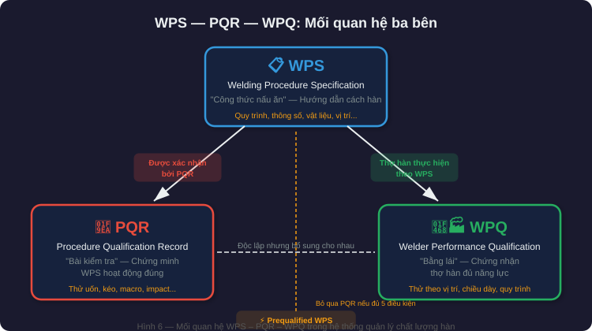
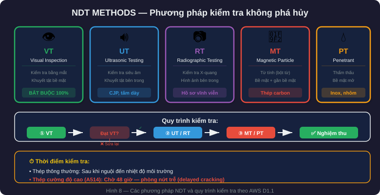
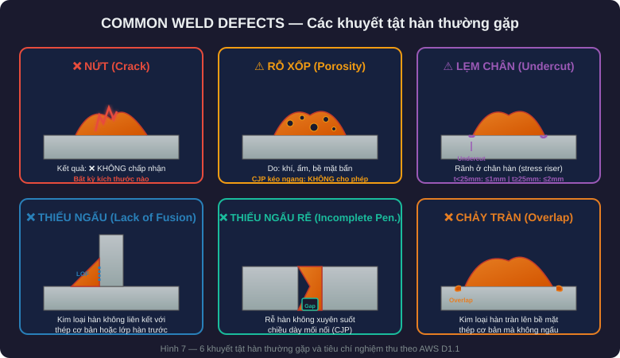

Before you start
Part 1 answers the question “what do I put on the drawing?”. Part 2 answers the harder one: “how do I know the weld in the field matches the drawing?” — from procedure records and welder qualification through to inspection and acceptance.
1. Welding procedures — WPS, PQR and WPQ
| Abbreviation | Full name | Role |
|---|---|---|
| WPS | Welding Procedure Specification | “The recipe” — detailed instructions on how to weld |
| PQR | Procedure Qualification Record | “The test” — proves the WPS actually works |
| WPQ | Welder Performance Qualification | “The licence” — certifies the welder is capable |

Prequalified WPS — the legal shortcut
AWS D1.1 allows a prequalified WPS without PQR testing, provided ALL five conditions are met:
- Approved processes: SMAW, GMAW (spray transfer only), FCAW, SAW. GMAW short-circuit is not prequalifiable.
- Base metal in a prequalified group (Groups I–IV, Table 5.3).
- Matching filler metal per Table 5.4.
- Joint details complying with the prequalified figures (5.1–5.4).
- Parameters within limits: preheat, interpass temperature, current, voltage and travel speed.
A PQR is required when: the joint is not in the prequalified list; the process is outside those four (EGW, ESW…); parameters exceed the limits; the base metal is not in a prequalified group; or the design engineer requires it.
2. Weld inspection and acceptance
| Method | Abbrev. | Detects | When to use |
|---|---|---|---|
| Visual inspection | VT | Surface defects | Mandatory for all welds |
| Ultrasonic testing | UT | Internal defects | CJP groove welds, thick plates |
| Radiographic testing | RT | Internal defects (image) | CJP groove welds, alternative to UT |
| Magnetic particle | MT | Surface and near-surface | Ferromagnetic materials (carbon steel) |
| Liquid penetrant | PT | Open surface defects | Non-magnetic materials (stainless) |

Visual acceptance criteria (AWS D1.1, Clause 8)
| Defect | Allowable limit |
|---|---|
| Crack | Not acceptable — any size |
| Overlap | Not acceptable |
| Surface porosity | CJP in transverse tension: no piping porosity allowed |
| Undercut | t < 25 mm: ≤ 1 mm · t ≥ 25 mm: ≤ 2 mm |
| Undersized or short | Not acceptable |
For ultrasonic testing, AWS D1.1 classifies indications as Class A–D based on signal amplitude and indication length: Class A is a severe defect and is rejected, Class D is a small acceptable indication — see Table 8.2. For radiography, the key advantage is the permanent record on film or in digital form.

3. The ten most common errors and how to avoid them
Design errors
| Error | Consequence | Prevention |
|---|---|---|
| No weld size specified | The welder decides; no quality control | Always note size and length on the symbol |
| Arrow side and other side reversed | Weld on the wrong side | Review drawings against a checklist |
| CJP specified without backing information | Disputes on site and delays | Always state whether backing is used |
| Ignoring the min/max size limits | Code violation and rework | Use AISC 360 Table J2.4 |
| No shop or field weld distinction | The erector does not know the sequence | Use the field weld symbol (⚑) |
Fabrication and erection errors
| Error | Consequence | Prevention |
|---|---|---|
| No surface cleaning | Porosity and lack of fusion | A mandatory cleaning procedure |
| Welding by feel | Unstable parameters and a high reject rate | Follow the WPS and check before each weld |
| Uneven preheat | Hydrogen cracking and a hard HAZ | Use controlled heating equipment |
| Wrong filler metal | A weld weaker than designed | Verify the filler metal before issue |
| Poor fit-up | Root opening too large or too small → lack of fusion or distortion | Use gauges and comply with tolerances |
4. Practical tips for design engineers
The KISS principle — Keep It Simple, Structural
- Prefer fillet welds whenever possible — cheaper, easier and faster.
- Use CJP only when full member strength is genuinely required.
- PJP is a good mid-range option for compression connections.
- Avoid over-welding — it wastes material and increases distortion and residual stress.
Weld cost optimisation
Fillet weld cost scales with the square of the leg size: doubling the size means four times the filler material. When more capacity is needed, increase the length rather than the size.
One side: w = 12 mm → A = 0.5 × 12² = 72 mm²
Two sides: w = 8 mm × 2 → A = 2 × (0.5 × 8²) = 64 mm²
→ about 11% material saved, equal or better capacitySpecial attention for seismic design
- AISC 341 is stricter than AISC 360; CJP is mandatory for beam-flange-to-column connections in moment frames.
- Demand critical welds require: filler metal passing the CVN toughness test, a WPS qualified by PQR, and 100% NDT.
- Protected zone — no attachments or welding are permitted within it.
5. Related standards
| Standard | Scope | What engineers need to know |
|---|---|---|
| AISC 360 | Structural steel design | Chapter J — welded connection design requirements |
| AISC 341 | Seismic design | Demand critical welds, protected zone |
| AWS D1.1 | Structural steel welding | WPS/PQR, prequalified procedures, inspection, acceptance |
| AWS A2.4 | Welding symbols on drawings | How to read and write welding symbols |
| AWS D1.8 | Seismic welding supplement | Supplements D1.1 for seismic applications |
| ASTM A6 | Structural steel shapes | Tolerances and mechanical properties |
| ASTM A36, A992, A572 | Common steel grades | Strength and weldability |
6. Comprehensive project checklist
Design phase
- Appropriate weld type selected for each connection?
- Weld size and length calculated?
- Min/max size verified per AISC 360 Table J2.4?
- Complete welding symbols per AWS A2.4?
- Shop and field welds clearly distinguished?
- NDT requirements specified (VT, UT, RT, MT, PT)?
- Demand critical welds identified where applicable?
Fabrication phase (shop)
- WPS prepared and approved?
- Welder holds a valid WPQ?
- Base metal and filler metal verified?
- Fit-up within tolerance?
- Preheat and interpass temperatures per the WPS?
- Visual inspection after each pass for multi-pass CJP?
- NDT performed upon completion?
Erection phase (field)
- Field welds have their own WPS?
- Environmental conditions acceptable (wind, rain, temperature)?
- Field welders hold a WPQ for the required positions?
- NDT carried out at the specified rate?
- Acceptance records complete?
Closing
A weld is not just a line of molten metal on a drawing. It is the language of communication between the design engineer, the fabricator, the welder and the inspector. Understand correctly, specify correctly, inspect correctly — that is a safe structure.
| Key point | Keyword |
|---|---|
| Fillet is the most common; throat = 0.707 × leg | te = 0.707w |
| CJP develops full strength, PJP only part of it | CJP vs PJP |
| Below the reference line is arrow side, above is other side | Arrow / Other |
| Minimum size follows the thinner plate | Table J2.4 |
| No WPS means no welding | No WPS = No Weld |
| Visual inspection is mandatory on 100% of welds | VT = Gatekeeper |
| A crack is an immediate reject, in every case | Zero Crack |
| High-strength steel waits 48 hours before inspection | 48h Rule |
| Weld cost scales with the square of the leg size | Cost ∝ w² |
| Demand critical welds need their own PQR | No Prequalified for DCW |
Part of the series "Structural design for industrial facilities" — Roberto Structural. The content is technical guidance; the engineer remains responsible for checking and adapting it to the conditions of each project and the requirements of the governing code. Standards evolve — always check the latest editions of AWS D1.1, AISC 360 and AWS A2.4 before applying them.